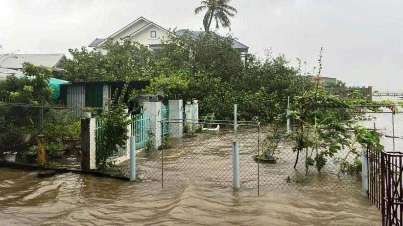
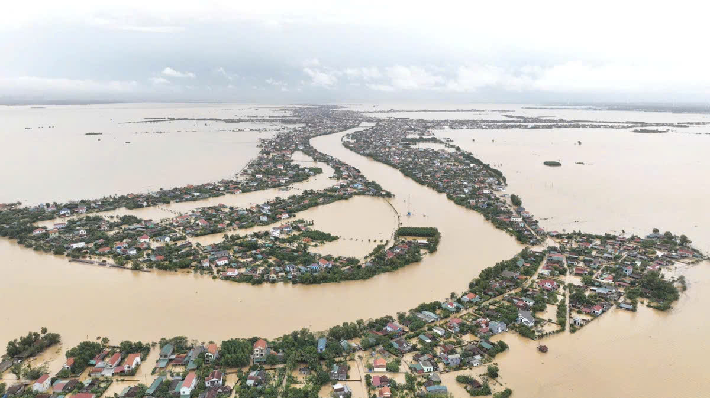
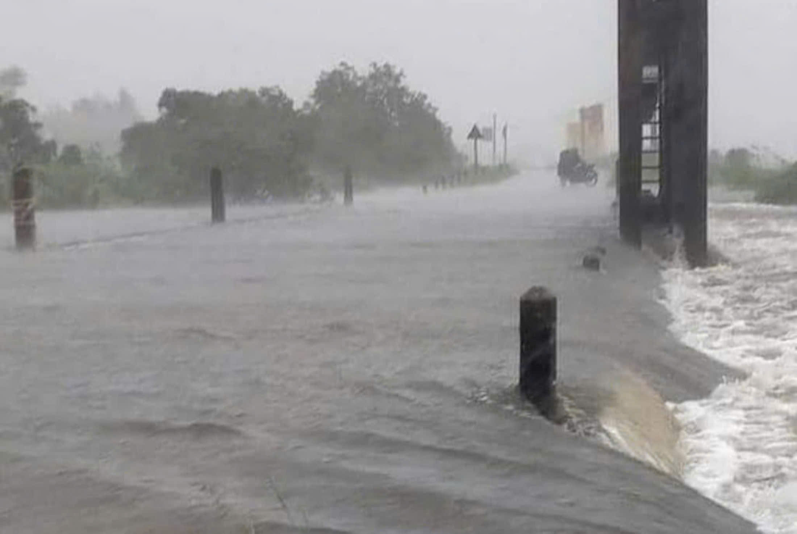

|
TRANG CHỦ | ĐĂNG KÍ | MUA HÀNG | GIỎ HÀNG | LIÊN HỆ | TRANG THANH TOÁN |
| |
TRANG CHỦ | ĐĂNG KÍ | MUA HÀNG | GIỎ HÀNG | LIÊN HỆ | TRANG THANH TOÁN |
|
Hai người ở Thừa Thiên - Huế chết trong bão Trà Mi Tính đến thời điểm hiện tại, mưa lũ do bão Trà Mi gây ra khiến ít nhất 2 người ở Thừa Thiên - Huế chết và mất tích, nhiều cây cối, hoa màu và công trình hư hỏng. Tới thời điểm hiện tại, bão Trà Mi đã suy yếu. Tại Thừa Thiên - Huế, mưa đã tạnh, nước sông Hương đang bắt đầu xuống. Tâm mưa do hoàn lưu bão Trà Mi gây ra đang dịch chuyển ra Quảng Trị và Quảng Bình. Ghi nhận của PV Báo Điện tử VTC News tại khu vực đập Đá đường Nguyễn Sinh Cung (TP Huế) nước rút nhanh, lực lượng chức năng đang thực hiện dọn dẹp bùn đất trước khi cho các phương tiện lưu thông trở lại. Hiện lực lượng chức năng tỉnh Thừa Thiên - Huế đang triển khai thống kế, khắc phục những thiệt hại do bão Trà Mi gây ra. Ghi nhận tại các tuyến phố của TP Huế, nhiều cây xanh bị đổ gãy đã được bộ đội, công an và các lực lượng khác hỗ trợ dọn dẹp để giao thông sớm thông suốt trở lại. Tại bờ biển xã Phú Thuận (huyện Phú Vang, tỉnh Thừa Thiên - Huế) sau khi thủy triều dâng cao, sóng biển mạnh, khiến nước chảy xiết qua bờ cát, tràn vào khu dân cư gây ảnh hưởng lớn tới cuộc sống của người dân.  |